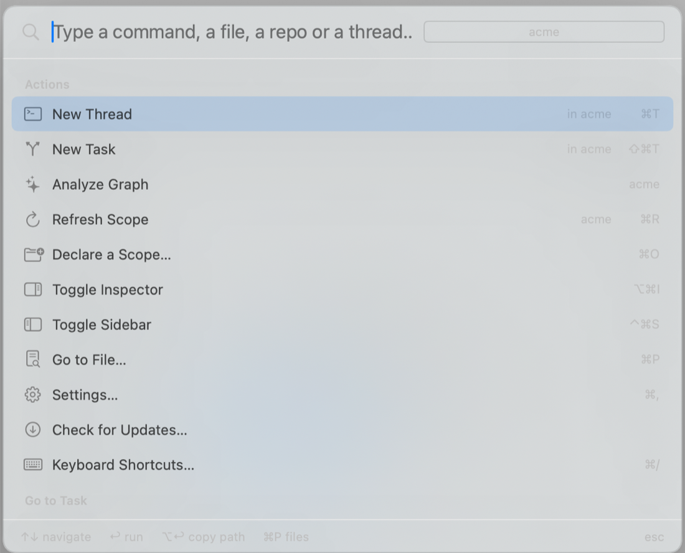

Files, keys, updates
On disk
~/.scope/ # SCOPE_HOME; override it with launchctl setenv SCOPE_HOME …
├── config.json # declared scopes + preferences
├── drivers/*.json # driver profiles
├── threads/<id>.json # one record per thread
├── tasks/<id>.json # one record per task
├── graph/<scope>.json # the repository cards
├── sandboxes/ # the task worktrees
└── scope.sock # hook events
~/Library/Application Support/Scope/ui-state.json # selection, expansion, panel widthsEvery store writes atomically. A file with a newer schema version than the running build is reported and left alone, never overwritten; a corrupt file is quarantined next to it rather than deleted.
The command palette
⌘K opens one field over everything: the actions of the current context, the files of the selection, the repositories of the scope and the open threads. ⌘P opens it straight in file mode.

While a terminal has keyboard focus it keeps ⌘K for itself. Click outside the terminal, or use Go → Command Palette…, until that is fixed.
Keyboard
| Key | Action |
|---|---|
| ⌘O | Declare a scope… |
| ⌘R | Refresh scope |
| ⌘T | New thread in the current context |
| ⇧⌘T | New task… (or undo the last close) |
| ⌘W / ⇧⌘W | Close thread / close window |
| ⌘. | Stop the thread |
| ⌥⌘R | Relaunch the thread |
| ⌘1–⌘9, ⇧⌘[ / ⇧⌘] | Switch threads |
| ⌘K | Command palette |
| ⌘P / ⇧⌘O | Go to file |
| ⌥⌘F | Filter the sidebar |
| ⌘D / ⇧⌘B / ⇧⌘P | Delta / Base / Pull requests |
| ⌥⌘I | Toggle the inspector |
| ⌘E / ⇧⌘E | Open the selection / the task in your editor |
| ⌘F, ⌘G | Find in the terminal or the diff |
| ⌥⌘K | Clear the terminal scrollback |
| ⌘/ | This list, in the app |
Settings

- General — config folder, default driver, editor command, terminal font size and appearance (follow the system, or always dark, which is what agent TUIs assume), notification status.
- Shell Environment — how the login shell is probed, and the resulting
PATH. - Drivers — every profile, the binary it resolves to, and Reload.
The editor command is a template: ["code", "-g", "{file}:{line}"]. {path},
{file} and {line} are filled in; unused parts are dropped rather than left dangling.
Updates
Scope ships with Sparkle. Scope → Check for Updates… reads a signed appcast attached to the latest
GitHub release; updates are verified with an EdDSA signature before they are applied. Prereleases
(v1.0.0-rc.1) are excluded from the stable feed.
What Scope touches
- It reads your declared folders — files, git metadata, README and manifests.
- It writes only under
~/.scope/and its own Application Support folder — with two exceptions you ask for: git operations you trigger from a panel, and the worktrees it creates for tasks. - It sends nothing anywhere. Network traffic comes from the agents you launch, from
git,gh, and from the update check.
Building and releasing
make generate # Scope.xcodeproj from project.yml
make build # Debug .app (CONFIG=Release for release)
make run # build + open
make test-one FILE=SlugTests
swift build # the ScopeKit package aloneReleases are driven by tags: pushing vX.Y.Z builds a universal DMG, attaches it to a GitHub
release with its checksum and the Sparkle appcast, and publishes it. The version is the tag; nothing in
the tree is bumped. See the README for the full pipeline and
its optional signing secrets.